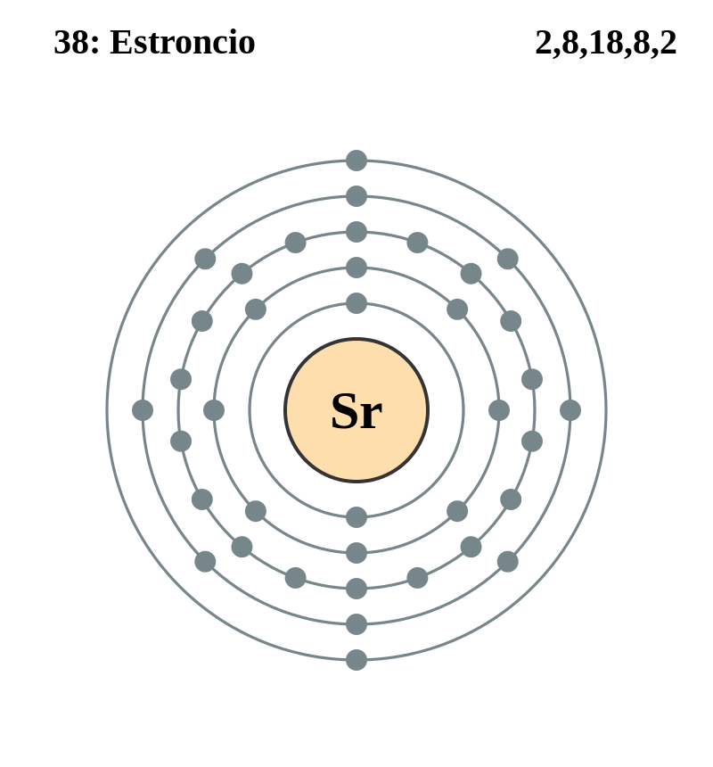

|
|
||
|
Estroncio El estroncio es más blando que el agua y se descompone violentamente en ella, como el calcio. El metal puede arder espontáneamente en contacto con el aire, lo que cambia rápidamente la apariencia plateada de su superficie expuesta a un tono amarillento. El estroncio se puede mantener sumergido en queroseno para evitar la oxidación. El estroncio natural está formado por una mezcla de cuatro formas de isótopos estables y también se conoce la existencia de dieciséis isótopos inestables. Las sales volátiles de estroncio, que dan un color carmesí a la llama, se utilizan en pirotecnia y luces de bengala. El estroncio se encuentra principalmente en los minerales celestita y estroncianita, y puede usarse en la obtención de imágenes médicas, la producción de imanes de ferrita y la refinación de cinc. |
 |
DATOS Número Atómico: 38 Peso Atómico: 87.62 Electronegatividad: 0,95 Configuración Electrónica: 5s2 Estados de Oxidación: +2 No. de Electrones de Valencia: 2 |